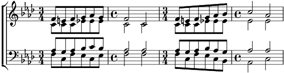

1. Doucement il vous caresse,
Puis brusquement il vous blesse,
Vous enchante, vous tourmente, Jamais en repos !
Il vous promet les ivresses,
Mais il connaît vos faiblesses :
Il s'amuse, vous abuse, Puis tourne le dos !
Refrain:
Il vous prend toujours en traître, Plus cruel que le requin
Sans pitié, il parle en maître. Ah ! Prenez garde au coquin.
2. Vous le prenez pour un ange,
Et vous chantez ses louanges,
Fariboles ! Sa parole, Ne vaut rien du tout !
Chaque jour son humeur change :
Ah ! craignez qu'il ne se venge !
Ironique, Sardonique, Il se rit de vous !
Refrain
3. L'on a déjà vu des braves,
N'être bientôt plus qu'épaves,
Par la faute de cet hôte trop bien accueilli !
Il vous lie, il vous entrave,
Il ne veut que des esclaves,
Et ses chaînes sont des peines, le jour et la nuit !